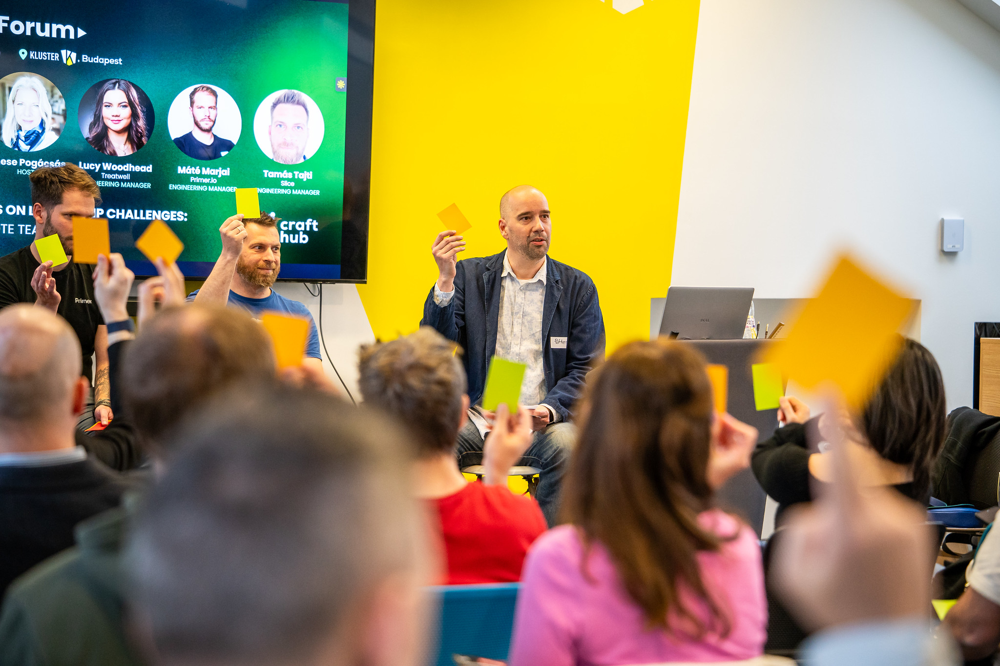
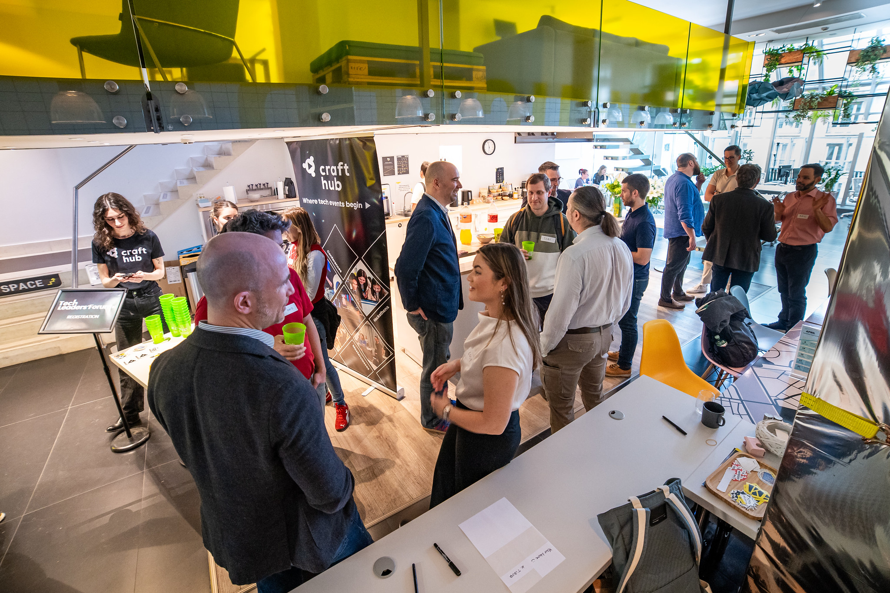
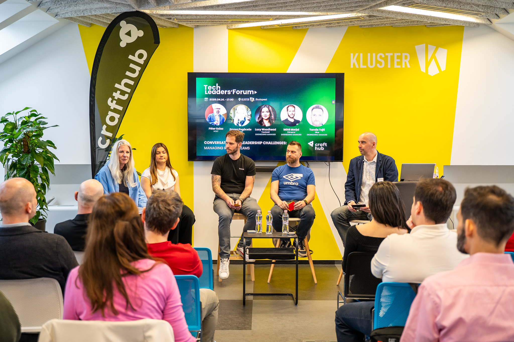
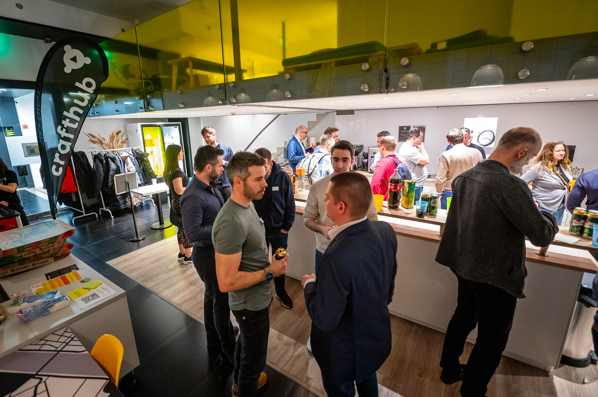
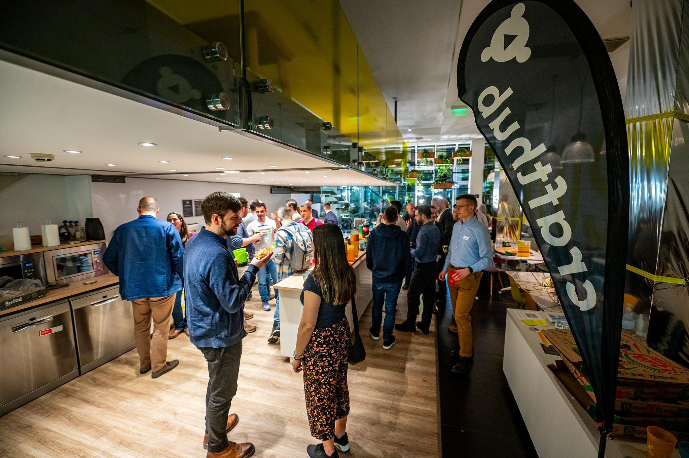

Emese Pogácsás
Leadership Coach & Advisor
A curated, in-person forum for engineering and tech leaders. We start with a panel. We stay for the conversations.
Tech Leaders' Forum sessions start with a moderated panel discussion and evolve into an open conversation with the room.
Attendance is intentionally limited to keep the atmosphere personal, thoughtful, and honest. The goal is not to create another conference experience, but a professional community where tech leaders can exchange perspectives without the usual performance mode.
Hosts
Leadership Coach & Advisor
Engineering Leadership Mentor
Why join
Panels are just the starting point; the most interesting conversations happen when audience members contribute their questions and experiences.
The messy decisions, the trade-offs, the doubts, the loneliness. They're more common than it feels like. Be a part of a community that shares the same challenges.
No slides, no lectures. Just ideas, first-hand experiences, and questions that stay with you.
What happens here
Each session starts with a panel: people who have actually been in the situations we talk about. Then we open it up: questions can get more practical, answers less certain, and at some point the conversation might become more interesting than the panel itself.
In the room





More than a meetup series
Throughout the year, we host focused TLF sessions in smaller interactive formats.
At larger conferences like Craft and Compass, we also create dedicated Tech Leaders programs and discussion spaces.
Different formats, same goal: helping engineering leaders learn from each other and build meaningful connections.
Not just theory
Sr. Director, AI Strategist
LastPass
Chief Delivery Officer
Aliz
Engineering Manager
Treatwell
Engineering Manager
Primer
Tech Lead, Applied AI
WorldQuant
Development Manager
Slice
Where you'll find us
Smaller, focused community events for engineering and tech leaders.
Tech Leaders' Forum special session as part of the Leadership track.
Explore the conferenceA discussion about feedback, AI, trust, and where human judgment still matters.
View session detailsFacilitated discussions